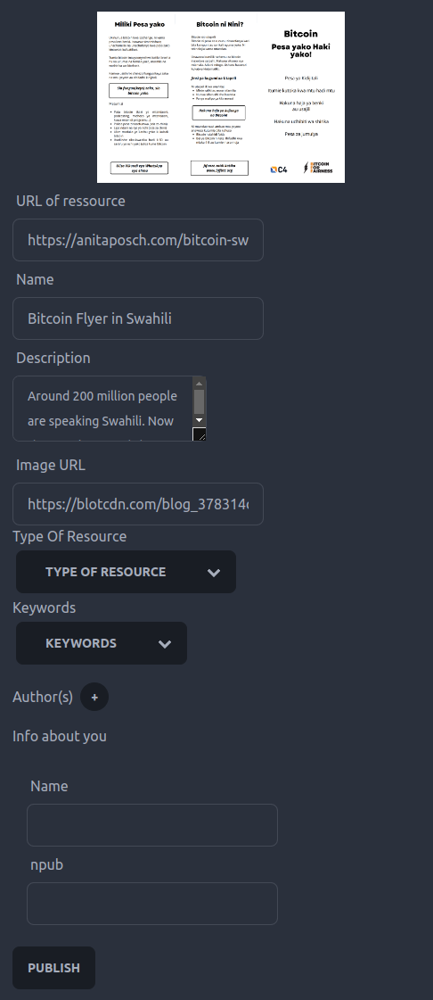
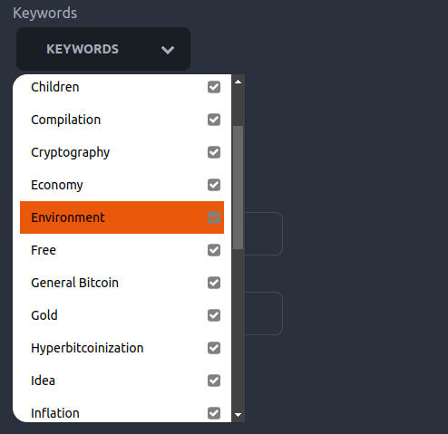
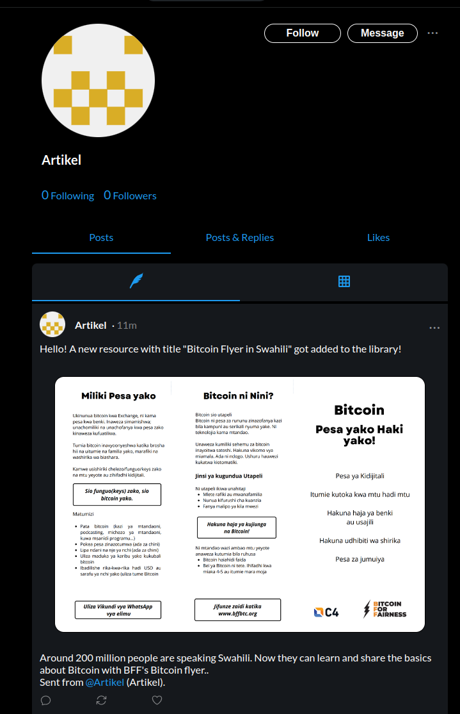
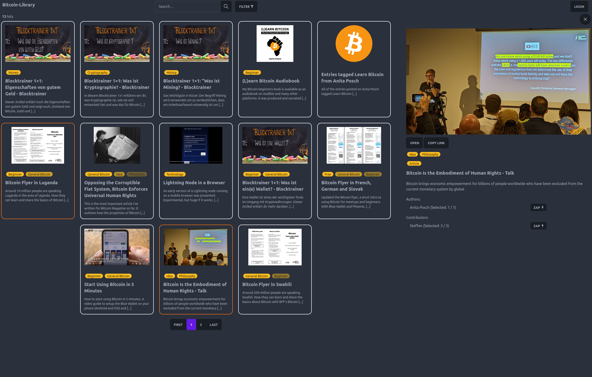
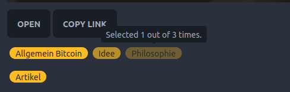
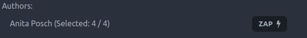

Hack On Nostr - Bitcoin Library 📚️

Bitcoin Library
A decentralized approach for community based web annotation using Nostr
ME
Steffen
aka @steffenr42 or @laoc42
Researcher and Software Developer in the field of Open Education
🧡 💜
Agenda
- What’s the Problem?
- Bitcoin Library: Demo
- Bitcoin Library: Under the Hood
- NIPs used and future development
What’s the Problem?
Lots of great educational resources about any kind of topic out there
BUT we lack a service to collaborativley collect, annotate and share these resources
➡️ to make them accessible for teachers and learners
❌ without building another centralized platform
Requirements for educational services (about highly controversial topics):
- decentralized
- censorship-resistant
- Value 4 Value
(V4V Because the content might not be funded from the state or similiar)
Nostr FTW!
- By design decentralized
- Hard to censor
- Affinity to Bitcoin and Lightning facilitates V4V
DEMO
Components of the Bitcoin Library
- Metadata-Editor to annotate web resources (Browser Extension)
- “Note Fetcher” to collect notes and transform them
- Frontend to display and search through resources
Browser Extension
- Simple Metadata Editor
- JSON Schema
- SKOS (Simple Knowledge Organization System)

Metadata Attributes as Nostr Bots

- SKOS Concepts (i.e. controlled vocabularies) set up as bots.
- Every selected entry will repost the resource.
- So you can follow these bots (and later send them resources as well)

Note Fetcher
- ETL-work
- polls the relay every 5 seconds to retrieve new data
- Either pushes it directly to the index if URL of resource does not exist
- OR Merges the metadata with existing metadata in the index
Frontend

Challenge: Differing Metadata Annotations
In a decentralized annotation system, metadata for the same resource will differ sooner or later
How to handle this?
- The note fetcher merges the metadata and sets it in proportion with attributes that were already given. The frontend resembles that through opacity of the tags.


It is not yet an implementation of (NIP-57), but we use the LUD16 field of the profiles retrieved via the npub of the actor. Then the payment is made using simple WebLN standard
That’s it?
Basically yes.
But you might have noticed:
There is no data in the code
Easy to adopt
The usage of JSON Schema and SKOS makes the whole approach easily adaptable.
Want to build a library (community) for recipes?
➡️ Create a JSON Schema for it and some vocabularies and go!
NIPs used
- NIP-1
- NIP-7
window.nostr; Login with Alby - NIP-10 to identify the bot in the event
- NIP-19 so clients can correctly substitute npubs with the nostr actors name (if provided)
- NIP51 for building lists of interesting content (see https://listr.lol/)
- (NIP-57) retrieving lud16 fields from a provided npub to tip the authors
Future Developments
- go public
- fill with resources
- think about UX for mobile users
- build a community
- add i18n
Questions / Discussion
Thank you!